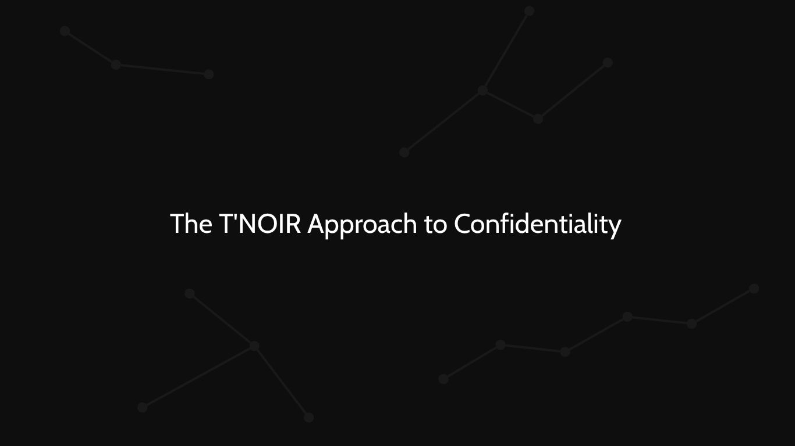

The T'NOIR Approach to Confidentiality
Your questions are personal. Your privacy deserves care.

Some questions are easy to share. Others are deeply personal.
Whether you are exploring a relationship, considering a career decision, or trying to understand a difficult situation, a tarot reading may involve thoughts and experiences you prefer to keep private.
At T'NOIR TAROT, we believe that privacy should be treated with care and respect throughout the reading experience. Here is what confidentiality means to us.
01 — Your questions are personal
Every reading begins with a question, and that question may contain details about your life, relationships, or concerns.
You should feel able to focus on what you want to understand without unnecessary pressure to disclose more than the reading requires.
We encourage clients to share only the information relevant to their questions. You do not need to provide unnecessary personal details to make a question meaningful.
02 — Respect beyond the reading
Confidentiality is not limited to the moment a reading is delivered.
Questions, interpretations, and personal experiences should be treated respectfully. A client's reading should not become public content or a conversation shared with others without appropriate permission.
At T'NOIR TAROT, respect for the individual is part of how we approach the reading experience.
03 — Your story is not our content
Client feedback can help others understand a service, but sharing a private experience publicly requires care.
A reading, message, screenshot, or testimonial should not be published in a way that reveals a client's identity or personal circumstances without their permission.
If you choose to provide feedback, your permission should be obtained before it is used publicly. Your experience belongs to you. Sharing it should remain your choice.
04 — Transparency matters
Privacy is more than a statement on a website. It also depends on how information is collected, accessed, stored, and used.
When you submit a booking, you should be able to understand what information is required and how it is handled.
T'NOIR TAROT aims to make its data practices clear through its booking process and Privacy Policy. Before submitting sensitive information, review the applicable policy and provide only the details necessary for your request.
05 — Share only what is necessary
A tarot reading does not require every detail of your life.
When preparing a question, consider whether names, screenshots, private conversations, or identifying information are actually necessary.
Often, a brief explanation of the situation is enough to establish the context for a reading. Keeping your question focused can also help keep unnecessary personal information out of the process.
06 — Trust is built through practice
Trust is not established by words alone.
It develops through clear expectations, respectful communication, consistent boundaries, and responsible handling of client information.
At T'NOIR TAROT, confidentiality is a principle we aim to uphold throughout the reading experience. We believe that seeking a different perspective should not require giving up your sense of privacy.
Your story remains yours
A reading may explore personal questions, but the decision to share those questions with others should remain yours.
We approach every reading with respect for the person behind the question. Privacy is not an extra. It is part of the experience.
Begin your reading
Explore our available readings and submit your request through the official T'NOIR TAROT website.
Your story. Your perspective.